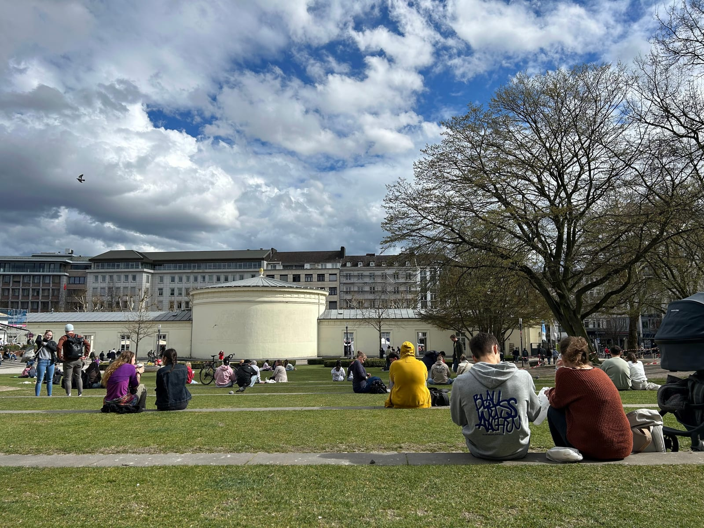
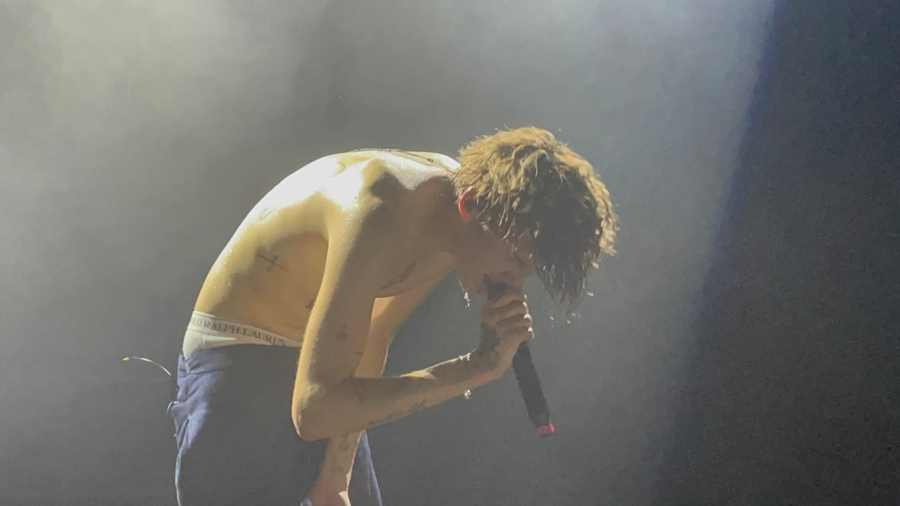
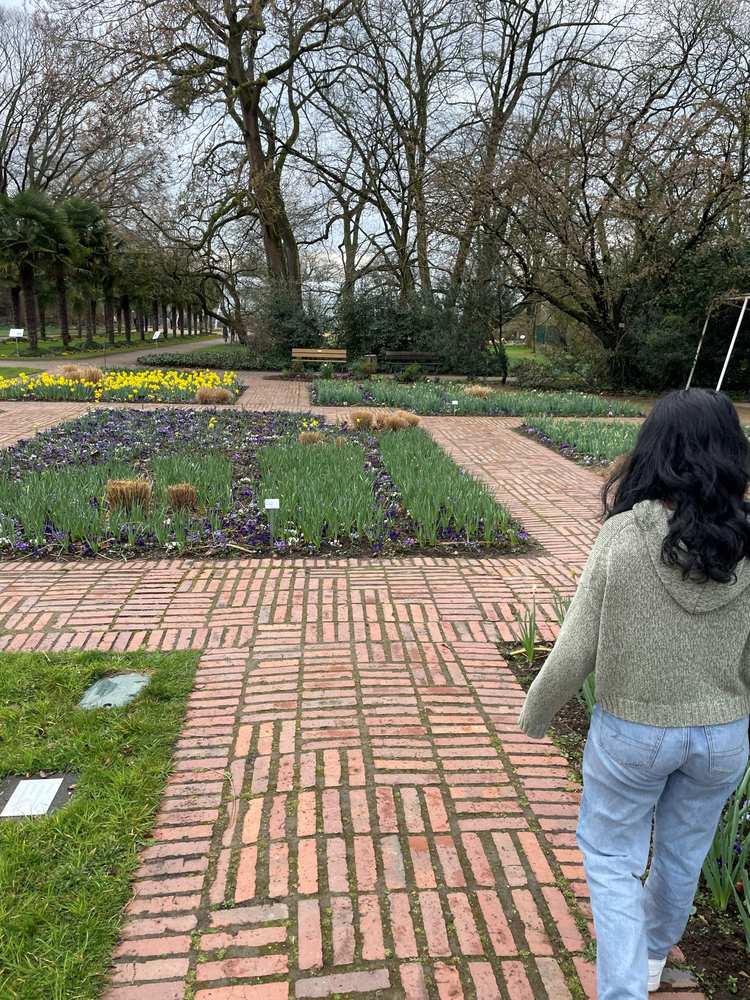

WESTERN GERMANY
Friday (Dortmund)
- Got on an 8:46 train to Dortmund
- Arrived and checked into the hostel and dropped off our bags before going to the Deutsches Fußball Museum
- Cool to see all the old artifacts from old German soccer teams
- Walked up and down this one shopping street for a few hours grabbing lunch and some BVB merch
- Lots of homeless people here
- Took the U-Bahn to Signal Iduna Park for our tour
-
1 / 3
- Even though the tour was in German and we barely understood any of it, the tour was still great
- Got to see locker rooms, benches, yellow wall, etc.
- Went to Dixon's Kitchen for Indian
- Much better than expected, actually had some spice to it
- Went back to the hostel to shower and sleep
- Talked to a Serbian guy staying in our room just about life, cultural differences, and Europe
- Held a normal conversation for like 30 minutes even though his English was "bad" because he hasn't needed it for a few years
Saturday (Aachen/Cologne)
- Got on an 8:09 Regional Bahn to Aachen (included in our Deutschland Ticket)
- Got to Aachen and went to the Carolus Thermen baths
- Not as good as the thermal baths in Budapest but still nice
- Went to Barbarella for brunch
- They were done with breakfast so we got bagel sandwiches
- Mine was not good the bagel isn't toasted and the chicken was way overcooked
- Got Streuselbrötchen from Moss and ate at the park

- Tasty but very heavy and buttery
- Went to the Aachener Dom
-
1 / 2
- Very pretty inside with lots of tall stained glass windows
- Got Printen, it's pretty good, tastes like gingerbread, but I was expecting it to be crunchier, it's kind of chewy
- Got souvenirs and walked around for a bit before getting on the 3:51 train to Cologne
- Arrived in Cologne and got a peek at the Cathedral before checking into the hostel and regrouping
-
1 / 3
- Weren't very hungry so we had a snack for dinner and got drinks from Rewe
- Also tried to get drinks at a bar but we didn't have enough cash
- The bartender was trying to tell us there was an ATM nearby but we didn't see it so we just got drinks at the store again and walked to the show
- Got into the venue for the Glaive show and we were right in the middle

- Best Glaive show I've seen so far
- Kurtains was also pretty cool to see
- Walked home and went straight to bed
Sunday (Cologne)
- Slept in a bit and watched F1 before getting ready and showering
- Went to Cafe Extrablatt for a breakfast buffet and it was really good
- Took a tram to the Flora und Botanischer Garten to see the flowers and trees

- Took the tram and bus to the Lindt Schokoladenmuseum
- Not much to see in the museum, mostly just how the cocoa is grown and stuff and how they're doing it sustainably
- Mahathi did a tasting afterwards
- Walked to the Cathedral and saw the inside
-
1 / 3
- Got our bags and got on our 4:18 train back to Berlin